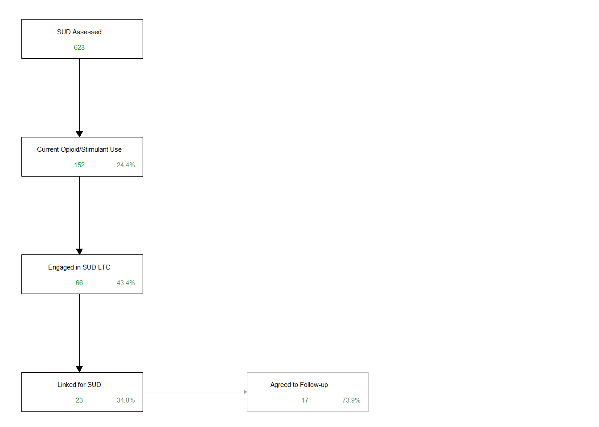

Substance Use Disorder (SUD)
Harm Reduction
Fentanyl Test Strips
During the EIP assessment and discussion with the patient/client, the HPA asks questions regarding the individual’s knowledge of harm reduction tools. More specifically, the individual is asked whether they are aware of tools used to test drugs for the presence of fentanyl, meaning their knowledge of fentanyl test strips (FTS). This assessment of their knowledge of harm reduction tools is available for all those receiving an EIP assessment, regardless of any indication of their own hisotyr of substance use. The total number of assessments where this question was answered was 769 (25.0% of all assessments completed, 769/3077). This question asks for a yes/no response, and the total number of assessments where the indiviudal responded that they were aware of FTS was 391 (50.8% of all those asked about their knowledge of FTS, 391/769). If they stated that they were aware of FTS, the indiviudal is then asked about their prior use of these harm reduction tools. The total number of assessments where the individual stated that they were aware of FTS that answered this follow-up question was 341 (87.2% of all assessments where the individual was aware of FTS, 341/391). Again, this is a yes/no response, and the total number of assessments where the individual stated that they have used FTS before was 190 (55.7% of all assessments where the individual was asked about prior FTS use, 190/341).
For those individuals that screened positive for any type of SUD through the EIP assessment, the number of assessments where they were also assessed for their knowledge of FTS was 310 (39.1% of all SUD positive assessments, 310/792), with 169 stating that they were aware of FTS (54.5% of all SUD positive assessments where the individual was also assessed for FTS knowledge, 169/310). The number of assessments where the individual screened positive for any SUD where they were also assessed for their prior use of FTS was 160 (94.7% of all SUD positive assessments that were aware of FTS, 160/169), with 89 endorsing prior use of FTS (55.6% of all SUD positive assessments also assessed for prior FTS use, 89/160).
During each encounter, individuals are also offered these harm reduction tools and provided with FTS if they are interested in receiving them at that time. The number of assessments where individuals who were asked whether they would be interested in recieving FTS was 793 (25.8% of all assessments, 793/3077), with 357 stating that they were interested (45.0% of all assessed for interest in receiving FTS, 357/793). Once they stated that they had an interst in recieving FTS during their encounter, the HPA documents whether they were able to provide the individual with FTS and how many they were given for reporting purposes. The number of times the individual was provided with FTS during their encounter was 337 (94.4% of all times when the individual stated interest in receiving FTS, 337/357).
For those that screened positive for any type of SUD during their encounter, the number of assessments where individuals who were asked whether they would be interested in recieving FTS was 311 (39.3% of all assessments where the individual screened positive for a SUD, 311/792), with 155 stating that they were interested (49.8% of all SUD positive assessments also assessed for interest in receiving FTS, 155/311). The number of times where the individual screened positive for a SUD and was provided with FTS during their encounter was 147 (94.8% of all times when the individual screened SUD positive and stated interest in receiving FTS, 147/155).
The total number of FTS distributed is reported on a monthly basis required for being a Project Dawn site, starting August 1st, 2023. Therefore, the total number of strips distributed are counted on a monthly basis and provided in the graph.
It is important to note that the number represented here is the number of individual strips, not the number of kits. Standard FTS kits are in packages of 5 strips, and the EIP HPA can select this as an option when documenting the distribution of FTS to individuals. However, they are also able to document non-standard amounts that are distributed in a free text field. Therefore, anytime they select that they distributed the standard kit of 5 strips, this is counted as five individual strips and combined with the free text field of non-standard distribution.
Naloxone Distribution
Naloxone distribution is documented in two different programs within EIP: (1) direct naloxone distribution of kits provided through grants, and (2) facilitated distribution where the EIP staff prompt medical staff to distribute naloxone from the Omnicell within UCMC and WCH EDs. The two programs will be discussed separately below. Also, the number of kits distributed from the UCMC and WCH Omnicells will be provided with the direct distribution information because those numbers are reported alongside the distribution of our EIP kits.
Work in progress
SUD Linkage to Care
The flowchart of the SUD Linkage to Care efforts for EIP are shown below.
